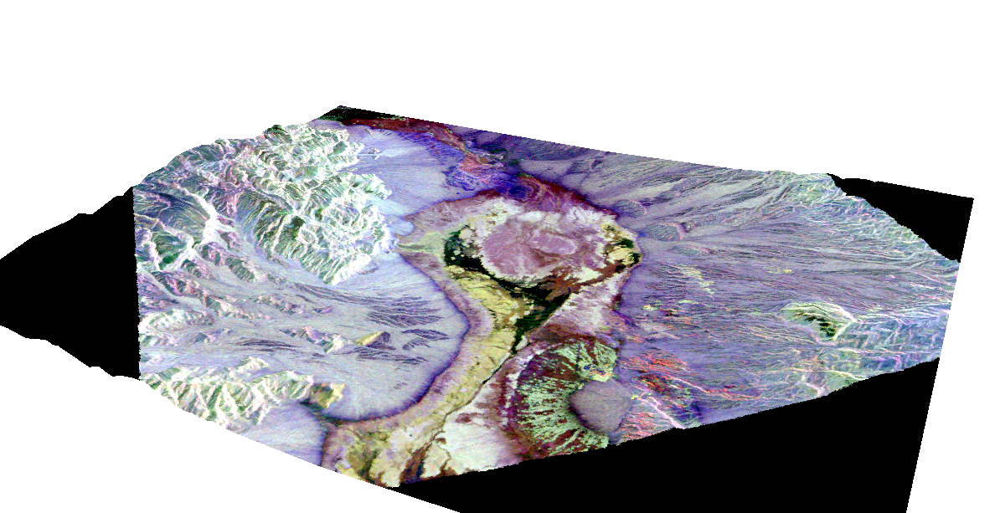
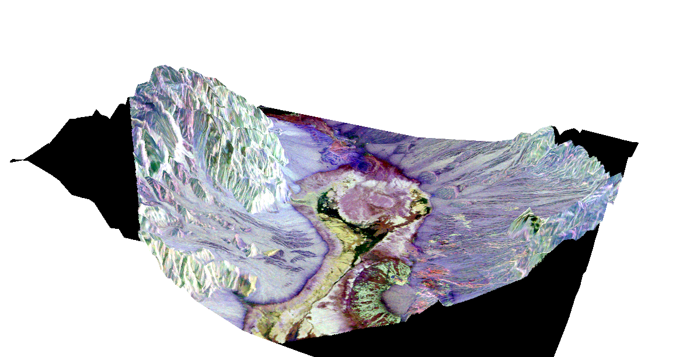
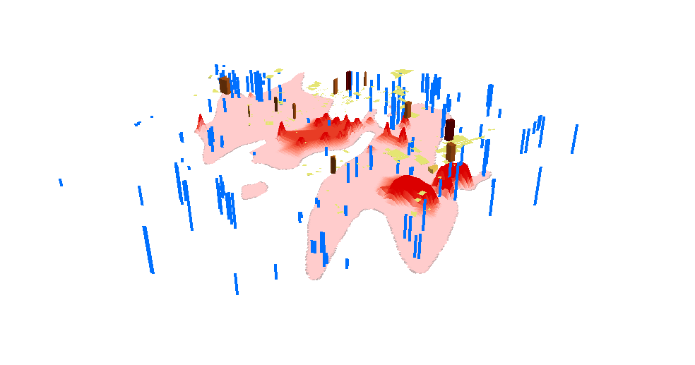
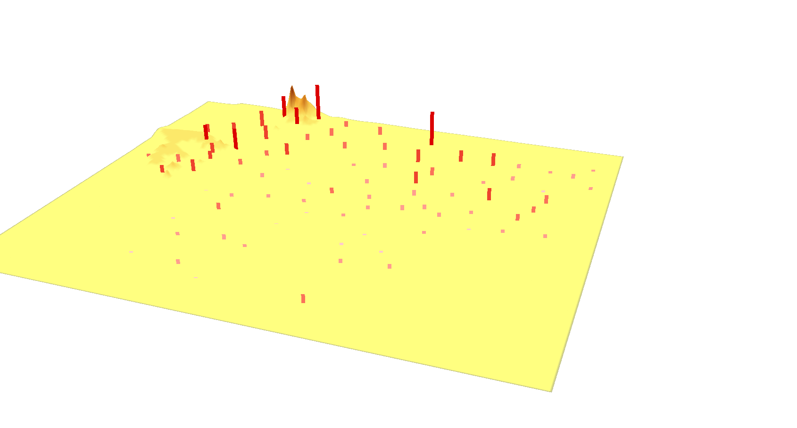
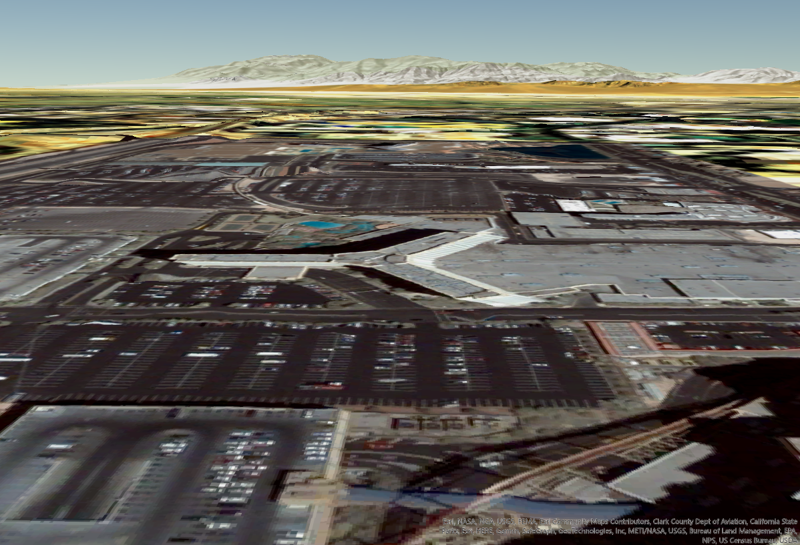
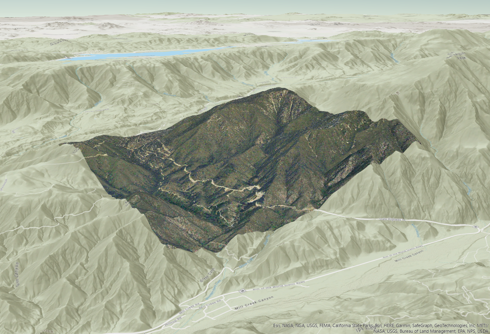
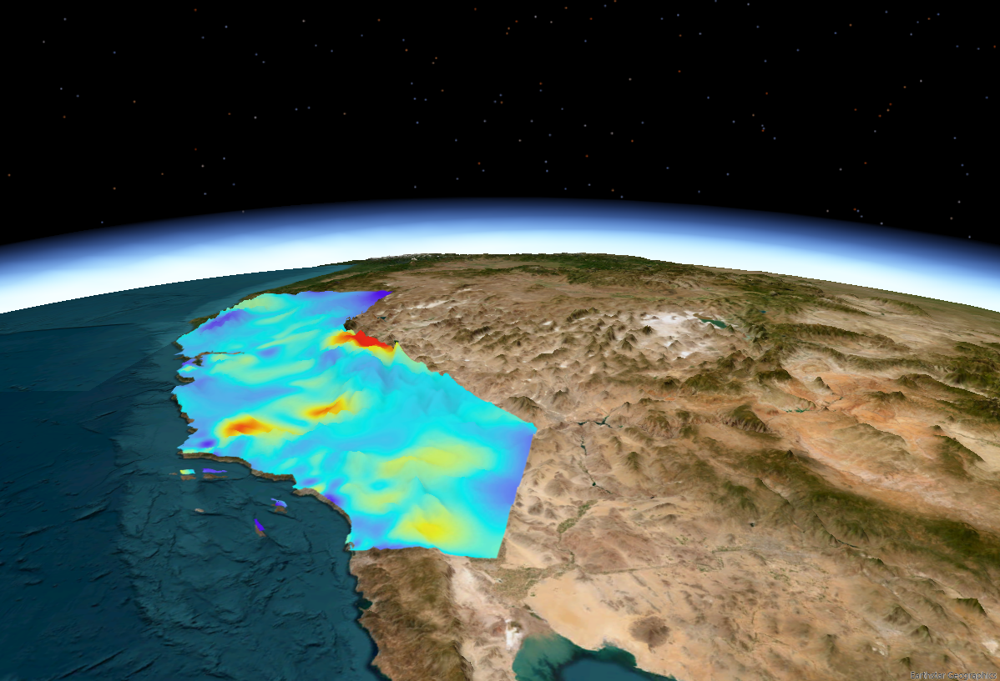

A terrain visualization of Death Valley in California made in ArcScene. Created by wrapping a satellite image around a TIN surface file.The same as above, but with the terrain exaggerated fourfold.A visualization of the contamination of an aquifer below a city or populated area. Buildings are represented in brown polygons, while wells are represented with blue polygons. The red bulges below signify the amount of contamination of the aquifer with nonorganic, volatile compounds. As this scene shows, the parts of the aquifers below buildings are the most heavily contaminated.A visualization of the contamination of soil with radioactive material, and the presence of thyroid cancer in areas surrounding the Chernobyl power plant in Ukraine. The more intensely colored bulges represent higher rates of contamination, which are highest in and around where the accident took place. The red polygons represent rates of thyroid cancer, which are highest in the most heavily contaminated areas in and around the plant.
ArcGlobe
A visualization of the Las Vegas Strip in Las Vegas, Nevada.A visualization of a forest in California.A visualization of the concentration of ozone in California laid over the terrain, which has been exaggerated tenfold.
For this part of the assignment, I used ArcGIS Pro, since I had a bit of trouble finding the default layers for ArcGlobe. Thankfully, they are preloaded into ArcGIS Pro.